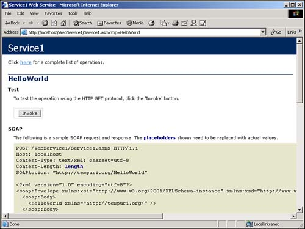

Note
Remember: Web Services can be created in various ways. Because you are creating this one using Visual Studio .NET, you will be using ASP.NET to create it. |
I have heard some great things about XML Web Services, but I don't know how to get started. What do I do to get started working with XML Web Services?
The best way to get started with XML Web Services is to simply create your own XML Web Service and start playing with it. Visual Studio .NET makes it extremely easy to do just that. To achieve this task, you will be creating your first Web Service, which, of course, will be Hello World. Now, before you start groaning, this example will show you the basics of creating a Web Service without a lot of other fluff that gets in the way and confuses things.
The way you start to create a Web Service is to choose ASP.NET Web Service for a new project. When you have done this, VS will create the Web Service project, and you will be brought to what looks like a blank Web Form, as displayed in Figure 13.3.
Note
Remember: Web Services can be created in various ways. Because you are creating this one using Visual Studio .NET, you will be using ASP.NET to create it. |
For the most part, you will be using Web Services to provide central processes or functionality that you want to be consistent regardless of where you consume it from. This means that you will not be creating a user interface that users will see; you are basically creating a class-like interface that will provide methods (hence the use of Service1.asmx instead of *.aspx). You will use *.asmx as an entry point for your Web Service.
To really get going with working with your first Web Service, you will click on the View Code icon in the Solution Explorer. When you do so, you will see the first method to create. That's right-it is Hello World. The first thing you should do now is uncomment the lines of code that read as follows:
'<WebMethod()> Public Function HelloWorld() As String ' HelloWorld = "Hello World" 'End Function
The screen should look like Figure 13.4.
That's it! You have created your first Web Service method. Now it's time to test it.
After you have created your Web Service, click the Start toolbar button. Visual Studio will then compile and build your Web Service. After which, Visual Studio will create a test page for your Web Service, as shown in Figure 13.5.
Note
As mentioned on this Web page, when you are developing your Web Service, Visual Basic uses a temporary namespace called http://tempuri.org/. When you are going to make the Web service public, you will want to create different namespace for the Web Service. I would recommend just using the examples they give on your test Web page. |
One of the items you see on this test Web page is the list of operations, otherwise known as methods you created. If you click on the Hello World method, you will see another page that you will use to invoke the actual method (see Figure 13.6.)

You also will see example code for calling the method using SOAP, HTTP GET, and HTTP POST. However, you will just be using this test page to check out the Hello World example, and you will be learning how to call methods from Visual Basic behind Web Forms in How-To 3.3.
If you click on the Invoke button, you will see the following:
<?xml version="1.0" encoding="utf-8" ?> <string xmlns="http://tempuri.org/">Hello World</string>
This is the value that the method you created returns. That's it! That's all there is to the test page.
Note
Before telling yourself that this test page doesn't do much, remember that if you did have a problem with the code in your Web Service, the problem would have shown up here. This quick testing saves a lot of hassle of writing code that actually calls the methods and then making sure the calling code wasn't causing errors. Using the test page allows you to debug your Web Service before you integrate it. Okay, I am now off my SOAPbox. Pun intended. |
Visual Studio .NET saves you from a lot of work. If you click the Back button and go to the main test page, you will see a link to Description in the top sentence. If you click on this link, you will see the SOAP code shown in Listing 13.1.
<?xml version="1.0" encoding="utf-8" ?> - <definitions xmlns:http= "http://schemas.xmlsoap.org/wsdl/http/" xmlns:soap="http://schemas.xmlsoap.org/wsdl/soap/" xmlns:s="http://www.w3.org/2001/XMLSchema" xmlns:s0="http://tempuri.org/" xmlns:soapenc="http://schemas.xmlsoap.org/soap/encoding/" xmlns:tm="http://microsoft.com/wsdl/mime/textMatching/" xmlns:mime="http://schemas.xmlsoap.org/wsdl/mime/" targetNamespace="http://tempuri.org/" xmlns="http://schemas.xmlsoap.org/wsdl/"> - <types> - <s:schema elementFormDefault="qualified" targetNamespace="http://tempuri.org/"> - <s:element name="HelloWorld"> <s:complexType /> </s:element> - <s:element name="HelloWorldResponse"> - <s:complexType> - <s:sequence> <s:element minOccurs="0" maxOccurs="1" name="HelloWorldResult" type="s:string" /> </s:sequence> </s:complexType> </s:element> <s:element name="string" nillable="true" type="s:string" /> </s:schema> </types> - <message name="HelloWorldSoapIn"> <part name="parameters" element="s0:HelloWorld" /> </message> - <message name="HelloWorldSoapOut"> <part name="parameters" element="s0:HelloWorldResponse" /> </message> <message name="HelloWorldHttpGetIn" /> - <message name="HelloWorldHttpGetOut"> <part name="Body" element="s0:string" /> </message> <message name="HelloWorldHttpPostIn" /> - <message name="HelloWorldHttpPostOut"> <part name="Body" element="s0:string" /> </message> - <portType name="Service1Soap"> - <operation name="HelloWorld"> <input message="s0:HelloWorldSoapIn" /> <output message="s0:HelloWorldSoapOut" /> </operation> </portType> - <portType name="Service1HttpGet"> - <operation name="HelloWorld"> <input message="s0:HelloWorldHttpGetIn" /> <output message="s0:HelloWorldHttpGetOut" /> </operation> </portType> - <portType name="Service1HttpPost"> - <operation name="HelloWorld"> <input message="s0:HelloWorldHttpPostIn" /> <output message="s0:HelloWorldHttpPostOut" /> </operation> </portType> - <binding name="Service1Soap" type="s0:Service1Soap"> <soap:binding transport="http://schemas.xmlsoap.org/soap/http" style="document" /> - <operation name="HelloWorld"> <soap:operation soapAction="http://tempuri.org/HelloWorld" style="document" /> - <input> <soap:body use="literal" /> </input> - <output> <soap:body use="literal" /> </output> </operation> </binding> - <binding name="Service1HttpGet" type="s0:Service1HttpGet"> <http:binding verb="GET" /> - <operation name="HelloWorld"> <http:operation location="/HelloWorld" /> - <input> <http:urlEncoded /> </input> - <output> <mime:mimeXml part="Body" /> </output> </operation> </binding> - <binding name="Service1HttpPost" type="s0:Service1HttpPost"> <http:binding verb="POST" /> - <operation name="HelloWorld"> <http:operation location="/HelloWorld" /> - <input> <mime:content type="application/x-www-form-urlencoded" /> </input> - <output> <mime:mimeXml part="Body" /> </output> </operation> </binding> - <service name="Service1"> - <port name="Service1Soap" binding="s0:Service1Soap"> <soap:address location="http://localhost/WebService1/Service1.asmx" /> </port> - <port name="Service1HttpGet" binding="s0:Service1HttpGet"> <http:address location="http://localhost/WebService1/Service1.asmx" /> </port> - <port name="Service1HttpPost" binding="s0:Service1HttpPost"> <http:address location="http://localhost/WebService1/Service1.asmx" /> </port> </service> </definitions>
The really nice thing to remember is that Visual Studio .NET generates all this code for you, so you don't have to.
For this How-To, you will create the example Web Service that was discussed in the "Technique" section.
Open up Visual Studio .NET to the Start Page, with no projects or solutions opened.
From the File menu, choose New, Project. You will see the New Project dialog box. Highlight the ASP.NET Web Service template (see Figure 13.7.) Then click OK. You will then be given a blank *.asmx file.
Click on the in the Solution Explorer. You will see the commented out method called Hello World. Uncomment the lines of code that read as follows:
'<WebMethod()> Public Function HelloWorld() As String ' HelloWorld = "Hello World" 'End Function
Click the Start button. You are shown the test page as described in the "Technique" ssection.
Although this is definitely the simplest example to be given while creating a Web Service, if you look at the description of even this simple Web Service and you see all the SOAP that is generated, you can appreciate all the work Microsoft has done to make the generation of Web Services using Visual Studio as painless as possible.